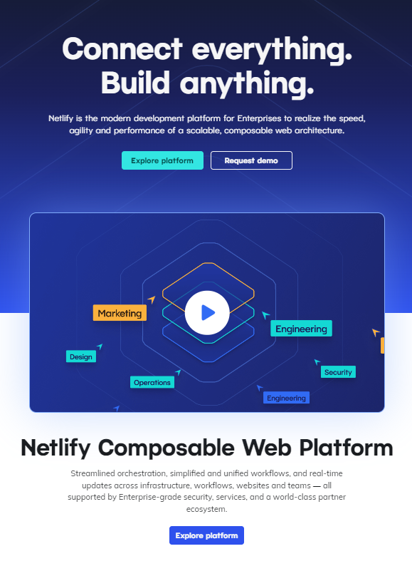

Instructions for commercial implementation of the game:
Netlify GitHub Pages — these are services that provide the ability to host static websites for free. They also have paid tariff plans that provide additional features and opportunities for commercial use.
To commercially implement a Wordle project using Netlify and GitHub Pages, follow these steps:
1. Set up a project repository on GitHub or use an existing one. repository, including HTML, CSS, JavaScript, images and other resources.
2. Create a Netlify account and link it to your GitHub repository. Netlify will automatically link your repository is with a service that will allow you to automatically deploy and update your website on Netlify with each new commit to the repository.
3. Configure the build of your project on Net life by specifying the entry point (for example, index.html ) and other build settings, if necessary. Net life provides various tools for building and processing projects, such as . You can set up build scripts if required for your project.
4. Set the for your website so that it is accessible by its own name instead of the Netlify address. Net life provides the opportunity to use your own domain names or offers a temporary domain name. If you want to use your own domain name, you will need to configure your domain's DNS records for instructions for Netlify servers.
5. Adjust the security and access settings for your website on Net life. You can set up an SSL certificate for to ensure a secure connection to your website, set up authentication or perform other settings security, if necessary for your project.
6. Test your website on Net life, make sure everything is working properly. Check that your JavaScript logic is it is executed correctly and any functions of the game work stably.
7. After successful testing, you can switch to the Netlify paid data plan to get additional features such as a faster Content Delivery Network (CDN), customizable domain names, advanced features monitoring and others.
By that point, your project will be fully deployed and accessible by your chosen domain name via Netlify. You will be able to commercially implement your Wordle project by attracting visitors, offering services, products or solutions, and earning income through your website.
In the game you can .